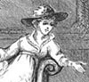
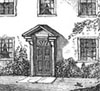

Collective Biographies of WomenAn Annotated Bibliography
Alison Booth
51.
Balfour, Clara Lucas Liddell. Women Worth Emulating. New York: American Tract Society; London: Sunday-School Union, 1877.
Search OCLC WorldCat for this title.
Search Google Books for this title.
Balfour, Clara Lucas Liddell. Women Worth Emulating. New York: American Tract Society; London: Sunday-School Union, 1877.
Bodleian British Library.
TOC: Mrs. Mary Somerville; Charlotte Elliott; Caroline Herschel; Elizabeth Smith; Amelia Opie; Sarah Martin and the Last Duchess of Gordon; Jane and Anne Taylor (Mrs. Gilbert).
-
Mary Somerville
-
Miss Charlotte Elliott
-
Caroline Herschel
-
Elizabeth Smith
-
Amelia Opie
-
Sarah Martin
-
The Last Duchess of Gordon
-
The Home at Ongar
Search OCLC WorldCat for this title.
Search Google Books for this title.